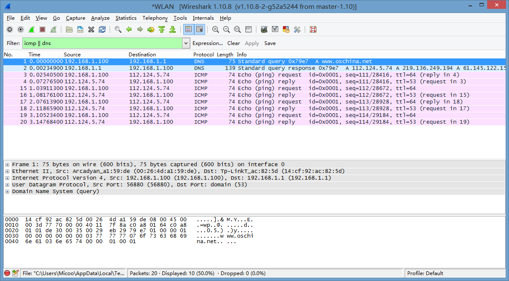
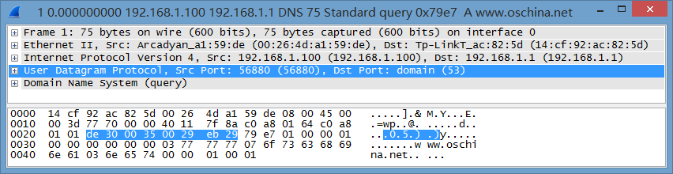
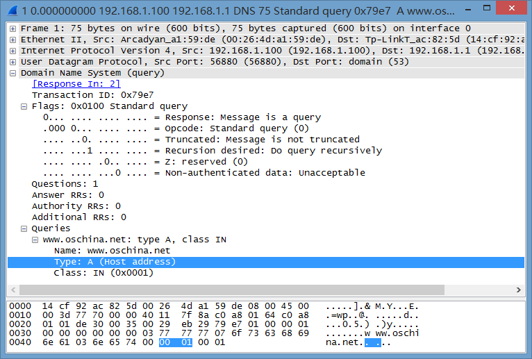
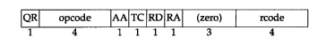
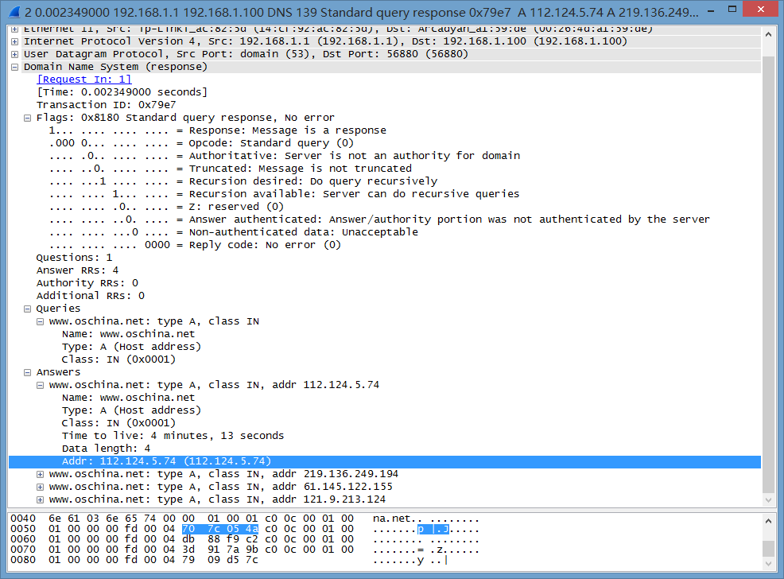

准备工作
系统是Windows 8.1Pro
分析工具是WireShark1.10.8 Stable Version
使用系统Ping命令发送ICMP报文.
开始工作
打开CMD.exe键入:
ping www.oschina.net
将自动进行域名解析,默认发送4个ICMP报文.
启动Wireshark,选择一个有效网卡,启动抓包.
在控制台回车执行完毕后停止监控.
分析阶段
截获的所有报文如下:

总得来看有两个DNS包(一次域名解析),和8个ICMP包(四次ping)
下面开始分析DNS的工作过程:
打开第一个包:

可以发现DNS为应用层协议,下层传输层采用UDP,再下层网络层是IP协议,然后是数据链路层的以太网帧.
需要关注的是应用层的实现也即DNS协议本身.
在此之前,可以从下层获得一些必要信息:
UDP(User Datagram Protocol)报文中: DNS的目的端口(Dst Port)是53
IPv4(Internet Protocol Version 4)报文中目的IP是192.168.1.1(局域网路由器)
由于IP报文在网络层进行路由选择,他会依次送给路由器而不是直接送给DNS服务器,这一点也十分容易理解,
第一个包是请求包,不可能直接包含DNS服务器地址.
展开DNS数据:

第一个是Transaction ID为标识字段,2字节,用于辨别DNS应答报文是哪个请求报文的响应.
第二个是Flags标志字段,2字节,每一位的含义不同,具体可以参考上面那个图,也可以看下面这个图:

QR: 查询/响应,1为响应,0为查询
Opcode: 查询或响应类型,这里0表示标准,1表示反向,2表示服务器状态请求
AA: 授权回答,在响应报文中有效,待会儿再看
TC: 截断,1表示超过512字节并已被截断,0表示没有发生截断
RD: 是否希望得到递归回答
RA: 响应报文中为1表示得到递归响应
zero: 全0保留字段
rcode: 返回码,在响应报文中,各取值的含义:
0 - 无差错
1 - 格式错误
2 - 域名服务器出现错误
3 - 域参照问题
4 - 查询类型不支持
5 - 被禁止
6 ~ 15 保留
紧接着标志位的是
Quetions(问题数),2字节,通常为1
Answer RRs(资源记录数),Authority RRs(授权资源记录数),Additional RRs(额外资源记录数)通常为0
字段Queries为查询或者响应的正文部分,分为Name Type Class
Name(查询名称):这里是ping后的参数,不定长度以0结束
Type(查询类型):2字节,这里是主机A记录.其各个取值的含义如下:
值 助记符 说明
1 A IPv4地址。
2 NS 名字服务器。
5 CNAME 规范名称。定义主机的正式名字的别名。
6 SOA 开始授权。标记一个区的开始。
11 WKS 熟知服务。定义主机提供的网络服务。
12 PTR 指针。把IP地址转化为域名。
13 HINFO 主机信息。给出主机使用的硬件和操作系统的表述。
15 MX 邮件交换。把邮件改变路由送到邮件服务器。
28 AAAA IPv6地址。
252 AXFR 传送整个区的请求。
255 ANY 对所有记录的请求。
Class(类):2字节,IN表示Internet数据,通常为1
下面是截获的第二个DNS包:

可以看到和第一个请求包相比,响应包多出了一个Answers字段,同时Flags字段每一位都有定义.
关注一下Flags中Answer RRs 为4 说明对应的Answers字段中将会出现4项解析结果.
Answers字段可以看成一个List,集合中每项为一个资源记录,除了上面提到过的Name,Type,Class之外,还有Time to
Live,Data length,Addr.
Time to Live(生存时间TTL):表示该资源记录的生命周期,从取出记录到抹掉记录缓存的时间,以秒为单位.这里是0x00 00 00 fd 合计253s.
Data length(资源数据长度):以字节为单位,这里的4表示IP地址的长度为4字节.也就是下面Addr字段的长度.
Addr(资源数据): 返回的IP地址,就是我们想要的结果.
可以发现有4条资源记录,4个不同的IP地址,说明域名 www.oschina.net 对应有4个IP地址,分别是:
112.124.5.74
219.136.249.194
61.145.122.155
121.9.213.124
CMD中显示的是第一条IP地址.我试了下直接访问上面各个地址的80端口(http),
第一个和第二个显示403 Forbidden
第三个和第四个显示404 Not Found
还有每个地址哦Server都不一样oscali,oscdb,liubc,ep2,第一个像阿里云服务器,第二个看起来像数据库的服务器,其他就不知道了…
Web服务器貌似是Tengine,
不知道为什么通过IP地址无法直接访问web站点,以后感兴趣再研究下哈哈
关于ICMP协议的报文分析将在之后的文章中给出.今天先到这吧.
最后,欢迎大家评论交流~特别是OSC在搞什么鬼.